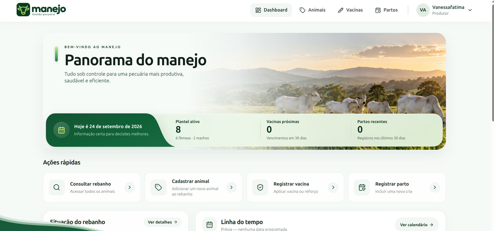
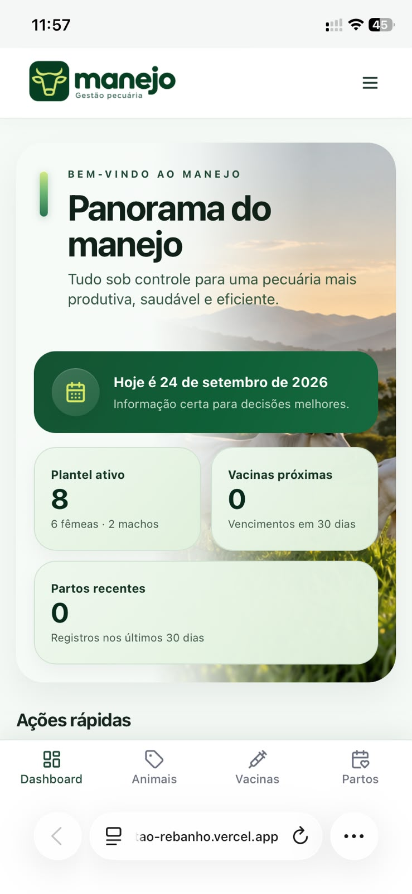

← Todos os projetos
04 / PRODUTO FUNCIONAL
Manejo — Gestão de Rebanho
Dados e próximos cuidados em uma rotina rural mais clara.
Product Design · Front-end
Manejo é uma plataforma web que reúne cadastro de animais, sanidade, reprodução, partos e eventos em uma experiência voltada à rotina da fazenda.
01 / PRODUTO
O próximo cuidado em contexto.
A visão geral aproxima indicadores do plantel, próximos vencimentos e ações frequentes. A busca e os filtros levam do panorama à ficha de cada animal.

02 / DESIGN E CÓDIGO
Interface funcional.
O trabalho conecta desenho de fluxos e implementação de uma interface funcional em React e Supabase, com adaptação para celular.
